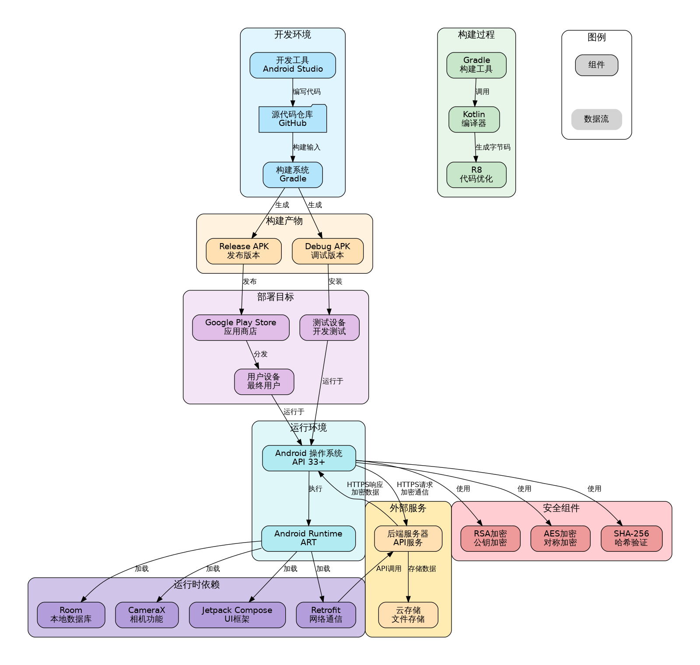

Production Environment Deployment Topology¶
The deployment architecture of DocuSnap-Frontend involves multiple components and environments, from development to end-user devices. The following diagram illustrates the complete deployment topology:

Development Environment¶
The development environment includes the following components:
1. Source Code Repository¶
- GitHub hosts the source code
- Supports version control and collaborative development
- Includes branch strategy and code review process
2. Development Tools¶
- Android Studio: Primary IDE
- Gradle: Build system
- Kotlin compiler: Code compilation
3. Development Process¶
- Local development and testing
- Code commits and reviews
- Continuous integration builds
Build Process¶
The build process includes the following steps:
1. Code Compilation¶
- Kotlin source code is compiled to bytecode
- Resource files are processed and optimized
2. Code Optimization¶
- R8 code optimization (currently not enabled)
- Resource compression and obfuscation
3. Build Types¶
- Debug build: Used for development and testing
- Release build: Used for distribution
4. Build Artifacts¶
- APK file: Directly installable application package
- App Bundle (AAB) not currently configured
Deployment Targets¶
The application's deployment targets include:
1. Test Devices¶
- Development testing environment
- Internal testing and QA
2. App Stores¶
- Google Play Store
- Other third-party app stores
3. User Devices¶
- End users' Android devices
- Requires Android 13 (API 33) or higher
External Services¶
The application depends on external services including:
1. Backend Server¶
- Provides API services
- Processes document and form data
- Performs OCR and field extraction
2. Cloud Storage¶
- Stores processing results and user data
- Supports data backup and synchronization
Deployment Workflow¶
The typical deployment workflow follows these steps:
- Development: Developers write and test code locally
- Code Review: Changes undergo peer review
- Integration: Approved changes are merged into the main branch
- Building: CI system builds the application
- Testing: Automated and manual testing is performed
- Release Preparation: Version numbers are updated, release notes are prepared
- Distribution: Application is uploaded to app stores
- Approval: App store review process
- Release: Application is made available to users
- Monitoring: Application performance and issues are monitored
Scaling Considerations¶
The application architecture considers the following scaling aspects:
1. User Base Scaling¶
- Local processing reduces backend load
- Efficient data synchronization minimizes network traffic
- Background processing optimizes user experience
2. Feature Scaling¶
- Modular architecture supports feature additions
- Clear interfaces between components
- Separation of concerns facilitates parallel development
3. Performance Scaling¶
- Image processing optimizations for different device capabilities
- Adaptive resource usage based on device specifications
- Configurable quality settings for different use cases
Deployment Security¶
The deployment process includes several security measures:
1. Code Signing¶
- Application is signed with developer's key
- Signature verification ensures integrity
2. Distribution Security¶
- App stores provide additional security verification
- Safe distribution channels reduce risk of tampering
3. Runtime Security¶
- Application operates in Android's sandbox environment
- Permissions are requested at runtime
- Sensitive operations require user confirmation
This deployment topology ensures that DocuSnap-Frontend is developed, built, and distributed in a secure and efficient manner, providing a reliable application to end users.